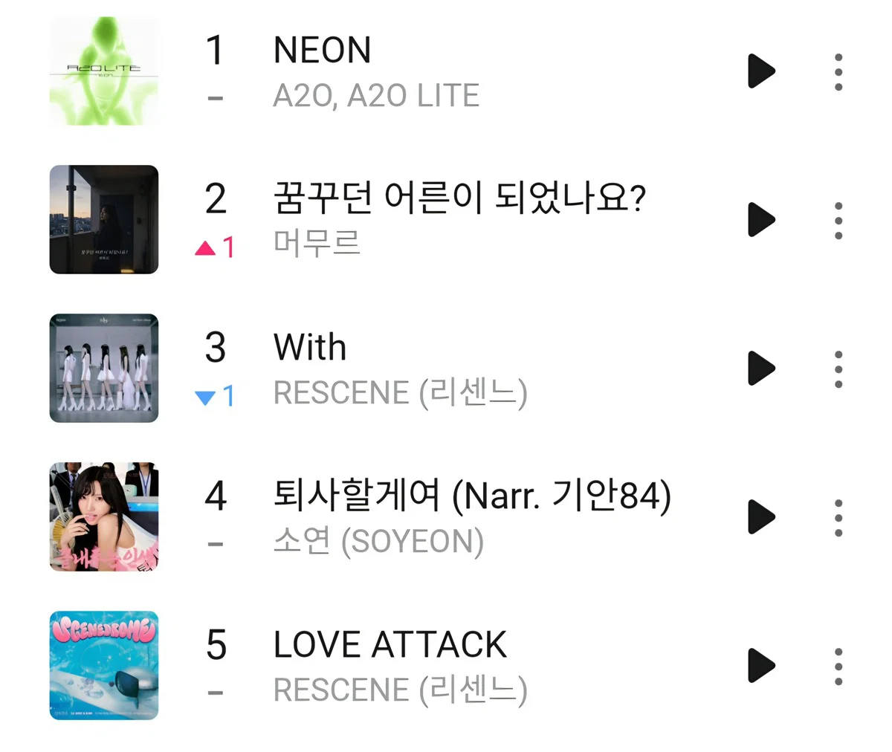

오늘자 멜론 일간 2위로 올라온곡이 ai곡
지금 추이면 곧 1위로 갈수도있다고함

오늘자 멜론 일간 2위로 올라온곡이 ai곡
지금 추이면 곧 1위로 갈수도있다고함
아 노래방에 없음?? 담에 노래방가면 부르려고 해ㅅ는데
있습니다

인간은 시를 쓰고 노래는 기계가 해주면 되는 건가
근데 요새 세상이 각박해서 감성팔이 곡이 잘먹히나 보다
미혼앤비혼인지 위염앤비염인지보다 노래는 저게 더 좋긴한 ㅋㅋㅋ
애초에 1위곡도 뭐 거의 AI수준 노래던데
저 노래 진짜 좋긴해..
무소치야 라이브를해라
그래서 노래방에 없는건가?